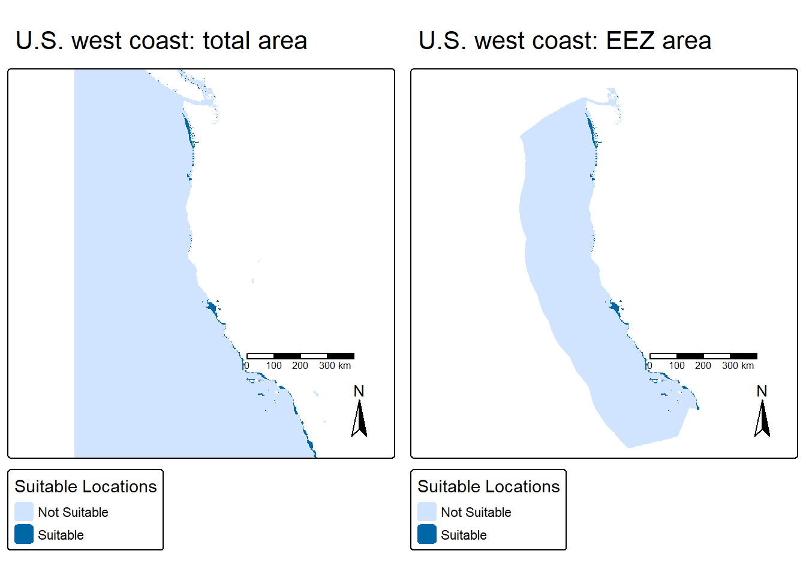
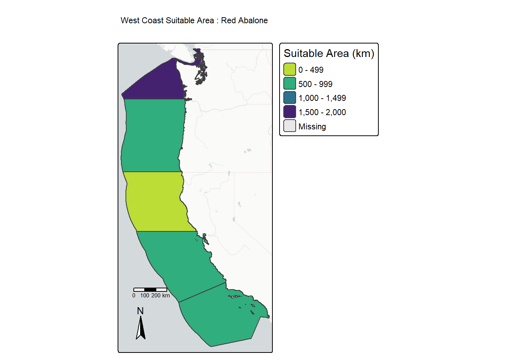

Code
library(tidyverse)
library(here)
library(tmap)
library(stars)
library(raster)
library(terra)Marine aquaculture has grown substantially globally and has both positive and negative economic, ecological, and sustainability potential1. Gentry et al2 estimated global seafood demand could be met using less than 0.015% of global ocean area. The United States is among the top countries with large marine aquaculture potential, likely due to long coastlines and exclusive economic zones3 (sea area 200 nm from a coastal baseline in which a sovereign state has exclusive rights).
With the rise of global seafood demand, we must leverage our marine aquaculture potential to meet the growing need. In order to maximize potential, we need to determine potential aquaculture locations based on optimizing habitat suitability for our aquaculture species of interest. In this study, we will develop a workflow to determine which exclusive economic zones (EEZ) are best suited for species of oysters and red abalone, two culturally and economically import species for seafood, based on suitable sea surface temperature and depth.
Information on optimal sea surface temperature and depth for red abalone were collected from Sea Life Base. Sea surface temperature from 2008-2012 were originally generated through NOAA’s Coral Reef Watch daily 5km SST anomalies. Depth of the ocean was characterized with General Bathymetric Chart of the Oceans (GEBCO. Maritime boundaries for exclusive economic zones (EEZ) were characterized by marineregions.org
Load packages.
library(tidyverse)
library(here)
library(tmap)
library(stars)
library(raster)
library(terra)Read in data.
# exclusive economic zones for west coast
eez <- st_read(here("posts", "2025-12-05-eez-suitability", "data", "wc_regions_clean.shp"))
# bathymetry
depth <- rast(here("posts", "2025-12-05-eez-suitability", "data", "depth.tif"))
# sea surface temperature
# read in as a stack
filelist <- list.files(here("posts", "2025-12-05-eez-suitability", "data", "average_annual_sst"), full.names = TRUE)
sst <- rast(filelist)In order to produce maps of our optimized suitable area for aquaculture, we need to clean and wrangle our data to be ready for analysis and visualizations. First, we will check the CRS of all data and transform if needed.
# check crs for all data files
crs(sst, describe = TRUE)$code
st_crs(eez)$epsg
crs(depth, describe = TRUE)$code
# transform sea surface temp to 4326
crs(sst) <- 'epsg:4326'# check again
if (crs(sst, describe = TRUE)$code == st_crs(eez)$epsg) {
print("CRS match!")
} else {
stop("CRS do not match, must transform")
}[1] "CRS match!"Now that our data match in CRS, we can clean sea surface temperature and depth data, including converting from kelvin to celsius, cropping our depth data to the extent of our sea surface temperature data, and resampling our depth data to match the resolution of our sea surface temperature data. This is a necessary step in order to accurately calculate optimal locations for aquaculture, and to produce maps of those locations.
# look at layer names
names(sst)
# find the mean SST from all years
# sst_avg <- app(sst, mean, na.rm = TRUE)
sst_avg <- mean(sst)
names(sst_avg) # just one layer!
# convert sst from kelvin to celsius
sst_avg <- sst_avg - 273.15
# crop depth raster to the extent of sst
depth_crop <- crop(depth, floor(ext(sst_avg)))
# check extents match
ext(depth_crop) == ext(sst_avg) # they are very close, but extents don't match
# resample depth data to match resolution to sst data
# use nearest neighbor approach
depth_resample <- resample(depth_crop, sst_avg, method = "near")# check for match in resolution, extent, and crs
if (res(sst_avg)[1] == res(depth_resample)[1] &
res(sst_avg)[2] == res(depth_resample)[2] &
ext(sst_avg) == ext(depth_resample) &
crs(sst_avg) == crs(depth_resample)){
print("Resolution, extent, and CRS match!")
} else {
stop("Resolution, extent, and/or CRS do not match.")
}[1] "Resolution, extent, and CRS match!"# combine depth and sst to make sure they match
check_match <- c(depth_resample, sst_avg)We will categorize a suitable location as an area that satisfies conditions for both ideal sea surface temperature and ideal depth for our species.
First we will develop a workflow to find suitable locations for Oysters.
| Metric | Range |
|---|---|
| Sea Surface Temperature | 11-30 C |
| Depth | 0-70 m |
For both our sea surface temperature and depth raster, we need to assign each cell a 0 or 1 based on whether it is in the suitable range for Oysters or not.
# min max sst and depth are replaceable for a function
# reclassify for suitable conditions
rcl_sst <- matrix(c(-Inf, 11, 0,
11, 30, 1,
30, Inf, 0),
ncol = 3, byrow = TRUE)
rcl_depth <- matrix(c(-Inf, -70, 0,
-70, 0, 1,
0, Inf, 0),
ncol = 3, byrow = TRUE)
# reclassify per layer for each matrix
sst_reclass <- classify(sst_avg, rcl_sst)
depth_reclass <- classify(depth_resample, rcl_depth)
# check min and max are 0 and 1
sst_min <- global(sst_reclass, min, na.rm = TRUE)$min
sst_max <- global(sst_reclass, max, na.rm = TRUE)$max
depth_min <- global(depth_reclass, min, na.rm = TRUE)$min
depth_max <- global(depth_reclass, max, na.rm = TRUE)$maxWe can check if our reclassification worked by checking the min and max of each raster.
| Metric | Min | Max |
|---|---|---|
| Sea Surface Temperature | 0 | 1 |
| Depth | 0 | 1 |
Now that our data are in 0s and 1s, we can calculate our ideal locations by multiplying our sea surface temperature raster with our depth raster. If there is a 1 in both (i.e a suitable location) our resulting raster will have a 1. If there is a zero in one, or both, it will result in a 0 indicating it is not a suitable location.
After finding all cells in our raster that are suitable for oysters, we will mask that raster to the extent of our exclusive economic zones, as that is where the highest potential of marine aquaculture would occur.
# depth x sst will return only cells with both 1s as 1
multiplication_func <- function(x, y) {
x * y
}
suitable_cells <- lapp(c(sst_reclass, depth_reclass), fun = multiplication_func)
# create mask with EEZ so nothing too deep in the ocean and no on-land is returned
suitable_cells_west <- mask(suitable_cells, eez)
# quick plot to check mask worked
map_suitable <- tm_shape(suitable_cells) +
tm_raster(breaks = c(0,1,2),
labels = c("Not Suitable", "Suitable"),
title = "Suitable Locations") +
tm_title("U.S. west coast: total area") +
tm_scalebar() +
tm_compass()
map_suitable_eez <- tm_shape(suitable_cells_west) +
tm_raster(breaks = c(0,1,2),
labels = c("Not Suitable", "Suitable"),
title = "Suitable Locations") +
tm_title("U.S. west coast: EEZ area") +
tm_scalebar() +
tm_compass()
tmap_arrange(map_suitable, map_suitable_eez, nrow = 1)
We can see we’ve cut out any areas that might have been on land, and all areas in the deeper ocean and outside of the U.S. EEZ zones. All areas that were deemed suitable for Oysters based on sea surface temperature and depth are shaded in darker blue, congregating generally right along the coastline.
We can use this smaller EEZ area to now calculate in km2 the area in each exclusive economic zone that would be suitable for oyster aquaculture. Another way to maximize our aquaculture potential is to hone in on the area of the west coast with the most suitable area for our species of interest. It is not realistic to assume aquaculture for one species can occupy the entire west coast, so by narrowing the scope to the most suitable areas we can ensure the best chance of survival of our species, likely leading to a more profitable aquaculture outcome.
We will count the cells we calculated as suitable in the previous part, and multiply that value by the size in km2 of each cell. We will then visualize these values on a map of each EEZ.
# how many cells are suitable in each zone
suitable_cells_west[suitable_cells_west == 0] <- NA
eez_rast <- rasterize(eez, y = suitable_cells_west, field = "rgn_id")
suitable_cells_west_zone <- zonal(suitable_cells_west, eez_rast, fun = "notNA")
knitr::kable(suitable_cells_west_zone,
caption = "Total suitable cells",
#format = "html",
col.names = c("Region ID", "Suitable Cell Count"),
table.attr = 'data-quarto-disable-processing="true"') %>%
kableExtra::kable_styling(bootstrap_options = c("basic", "hover"), full_width = FALSE)| Region ID | Suitable Cell Count |
|---|---|
| 1 | 71 |
| 2 | 11 |
| 3 | 238 |
| 4 | 211 |
| 5 | 162 |
# find cell size of suitable cell areas
suitable_cell_area <- cellSize(suitable_cells_west, unit="km")
# multiply against NAs to remove extra values
suitable_cell_area_values <- suitable_cell_area * suitable_cells_west
# sum across zones to get total suitable area
total_area <- zonal(suitable_cell_area_values, eez_rast, fun="sum", na.rm = TRUE)
knitr::kable(total_area,
#format = "html",
caption = "Total suitable area (km2)",
col.names = c("Region ID", "Total Suitable Area (km)"),
table.attr = 'data-quarto-disable-processing="true"') %>%
kableExtra::kable_styling(bootstrap_options = c("basic", "hover"),
full_width = FALSE)| Region ID | Total Suitable Area (km) |
|---|---|
| 1 | 1074.2720 |
| 2 | 178.0268 |
| 3 | 4069.8766 |
| 4 | 3757.2849 |
| 5 | 2378.3137 |
# join to spatial data to map
total_area <- left_join(total_area, eez, by = "rgn_id")
total_area <- st_as_sf(total_area)In our map, we can see the 5 EEZ areas split along the west coast of the United States, and the EEZ with the largest area of suitable habitat is in the central coast of California, following by the southern coast of California. If we, for example, want to maximize our potential for oyster aquaculture on the west coast of the United States, these areas may be the most ideal in terms of habitat suitability for oysters.
# map total area in each suitable zone
tm_shape(total_area) +
tm_basemap("CartoDB.PositronNoLabels") +
tm_polygons(fill = "area",
title = "Suitable Area (km)",
palette = "-viridis") +
tm_scalebar(breaks = c(0, 100, 200, 300),
position = c("left", "bottom")) +
tm_compass(position = c("left", "bottom")) +
tm_title("West Coast Suitable Area : Oysters")
Red Abalone are a popular seafood delicacy, and were farmed along the west coast of California prior to the fisheries closure in 2018 following multiple ecological stressors, ultimately leading to population declines. There are some farm operations for red abalone on the west coast, and multiple restoration efforts in practice.
We will compile the workflow above into a function to recreate a similar figure for Red Abalone.
| Metric | Range |
|---|---|
| Sea Surface Temperature | 8-18 C |
| Depth | 0-24 m |
suitable_location <- function(sst_low, sst_high, depth_low, depth_high, species_name) {
# set up reclassification matrix
rcl_sst <- matrix(c(-Inf, sst_low, 0,
sst_low, sst_high, 1,
sst_high, Inf, 0),
ncol = 3, byrow = TRUE)
rcl_depth <- matrix(c(-Inf, depth_low, 0,
depth_low, depth_high, 1,
depth_high, Inf, 0),
ncol = 3, byrow = TRUE)
# reclassify depth and sst data
sst_reclass <- classify(sst_avg, rcl_sst)
depth_reclass <- classify(depth_resample, rcl_depth)
# multiply reclassified layers to return cells that are suitable for our species
multiplication_func <- function(x, y) {
x * y
}
suitable_cells <- lapp(c(sst_reclass, depth_reclass), fun = multiplication_func)
summary(suitable_cells)
# create mask with EEZ so nothing too deep in the ocean and no on-land is returned
suitable_cells_west <- mask(suitable_cells, eez)
# set 0 cells to NA
suitable_cells_west[suitable_cells_west == 0] <- NA
# find cell size of suitable cell areas
eez_rast <- rasterize(eez, y = suitable_cells_west, field = "rgn_id")
suitable_cell_area <- cellSize(suitable_cells_west, unit="km")
# multiply against NAs to remove extra values
suitable_cell_area_values <- suitable_cell_area * suitable_cells_west
# sum across zones to get total suitable area, and join with spatial data to map
total_area <- zonal(suitable_cell_area_values, eez_rast, fun="sum", na.rm = TRUE)
total_area <- left_join(total_area, eez, by = "rgn_id")
total_area <- st_as_sf(total_area)
# map suitable areas
tm_shape(total_area) +
tm_basemap("CartoDB.PositronNoLabels") +
tm_polygons(fill = "area",
title = "Suitable Area (km)",
palette = "-viridis") +
tm_scalebar(breaks = c(0, 100, 200, 300),
position = c("left", "bottom")) +
tm_compass(position = c("left", "bottom")) +
tm_title(paste("West Coast Suitable Area :", species_name))
}Here we can see a very similar map to our previous map of oysters, with different values in each EEZ where it is now suitable locations for red abalone. We were able to condense all 3 parts of our previous workflow for oysters into a function that only requires parameters of ideal suitable conditions (sea surface temperature range, depth range, and species name). As long as you have that information, you can recreate this suitability map for any species of interest.
# Run the function with suitable conditions for red abalone
suitable_location(sst_low = 8,
sst_high = 18,
depth_low = -24,
depth_high = 0,
species_name = "Red Abalone")
For oysters, we can see the area on the west coast with the most suitable area is in the EEZ of the central area of California’s coast, with the next highest in southern California. For red abalone, there is generally less total suitable area on the west coast but the EEZ with the most suitable area is in Washington, with the rest of the west coast being fairly comparable in suitable area.
Native oysters, Olympia oysters for example, have a range that spreads all along the west coast. Their suitable EEZ areas make sense, with most of the area very close to shore where temperature and depth satisfies their ecological needs. Red abalone are also found along the entirety of the west coast, however with smaller suitable temperature and depth ranges, it makes sense they have a much smaller area of suitability.
While these maps are very informative for finding areas of the west coast for potential farming or restoration, for example, they only describe a small portion of what makes an area suitable for a species. There can be factors such as habitat and food availability, insulation from extreme weather events, competition or predation, or other ecological and environmental attributes that can influence the suitability of an area. However, they are an excellent first step to determine areas for future marine aquaculture, and a step forward in achieving our goal of leveraging our unique marine aquaculture potential in the U.S. to meet the growing seafood demand.
Gentry, R. R., Alleway, H. K., Bishop, M. J., Gillies, C. L., Waters, T., & Jones, R. (2020). Exploring the potential for marine aquaculture to contribute to ecosystem services. Reviews in Aquaculture, 12(2), 499-512.↩︎
Gentry, R. R., Froehlich, H. E., Grimm, D., Kareiva, P., Parke, M., Rust, M., Gaines, S. D., & Halpern, B. S. Mapping the global potential for marine aquaculture. Nature Ecology & Evolution, 1, 1317-1324 (2017)↩︎
Gunnar Knapp & Michael C. Rubino (2016) The Political Economics of Marine Aquaculture in the United States, Reviews in Fisheries Science & Aquaculture, 24:3, 213-229, DOI: 10.1080/23308249.2015.1121202↩︎